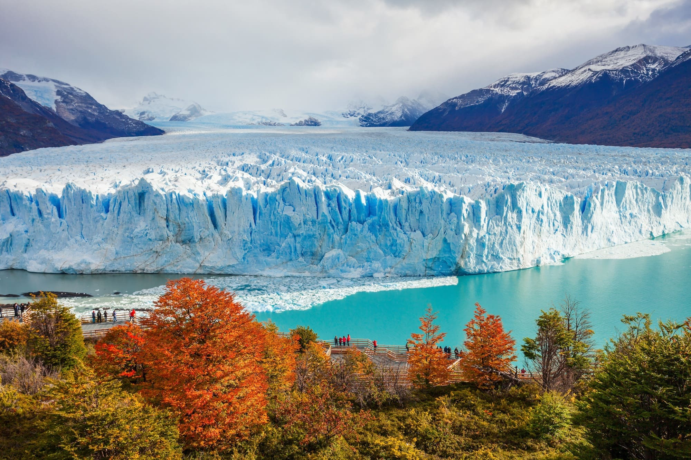
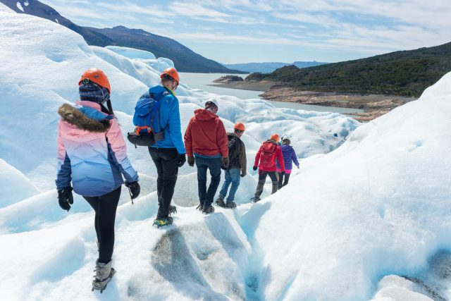
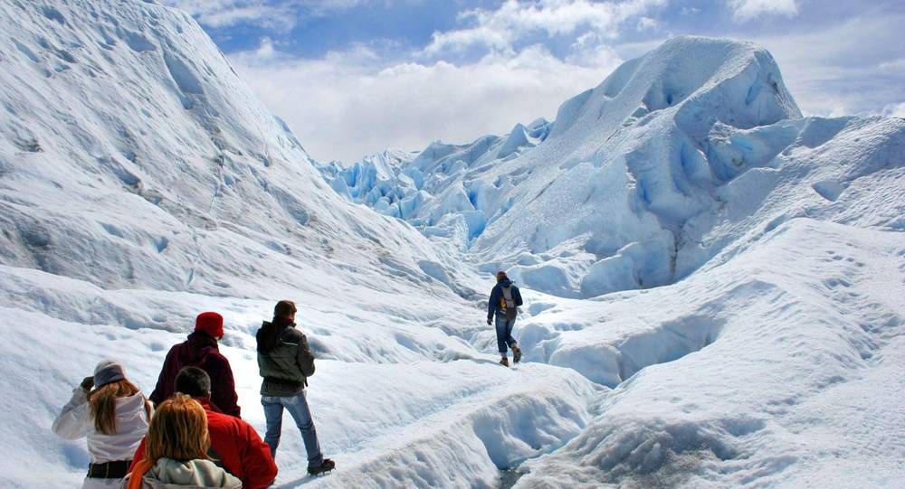
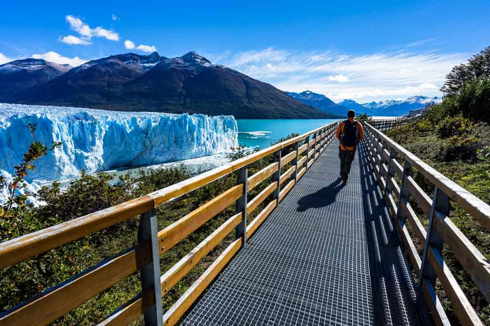

One of the few advancing glaciers in the world; you can watch massive ice chunks "calve" into the water.
It’s one of the few glaciers in a state of Equilibrium. Most glaciers are melting (negative mass balance), but this one gains as much ice in the mountains as it loses at the front.
Scientists are obsessed with its "Rupture" cycle. Every few years, the ice creates a dam against the land, the water pressure builds, and—BOOM—the ice bridge collapses in a spectacular show of physics.
To hear the "thunder" of ice cracking and see skyscraper-sized blue ice blocks crashing into the lake.

You spend about 1.5 hours directly on the ice.
Age Range: Strictly 10 to 65 years old (due to insurance and the physics of joint stress!)
What to Expect: You’ll take a boat across the Rico Branch of the lake, hike through a lush Magellanic forest (biology!), and then strap on crampons. You’ll explore the periphery" of the glacier. You'll see deep blue drains called sumps and small crevasses.
The Best Part: Most tours end with a "Glacier Whisky"—drinking 12-year-old scotch chilled with 18,000-year-old ice. Talk about a thermodynamic treat!

A massive 7-hour round trip, with about 3.5 hours deep inside the glacier’s center.
Age Range: Strictly 18 to 50 years old. You need a high "VO2 max" (aerobic capacity) for this one!
What to Expect: This is where you see the real geometry of the glacier. You hike much further into the center, where the ice is purest. You’ll see massive blue caves, giant lagoons of meltwater that look like turquoise ink, and huge vertical cracks (seracs).
The Experience: It’s silent, alien, and incredibly blue because the ice is so compressed that it absorbs every color of the spectrum except for high-frequency blue light.

There are over 4 kilometers of steel boardwalks.
The Strategy: Tell your visitors to take the "Lower Circuit" (Red Path). It’s the most difficult (lots of stairs!), but it gets you closest to the 70-meter high ice wall.
The Soundscape: You aren't just looking; you're listening. Because the glacier moves at 2 meters per day, the internal friction creates a constant "crackling" sound. When a building-sized chunk falls, the sound reaches you after the splash because of the speed of sound vs. light!
Crampon Physics: Explain that you have to walk like a "duck" (flat-footed). If you try to walk normally, you’ll catch a spike and trip. Stomp, don't slide!
Sun Protection: The glacier is a giant parabolic mirror. You will get a "Glacier Burn" under your chin and inside your nostrils from reflected UV rays if you don't wear sunscreen!
The Layers: It can be 15°C in the sun but 5°C the second a cloud covers the sun. Windproof layers are non-negotiable.